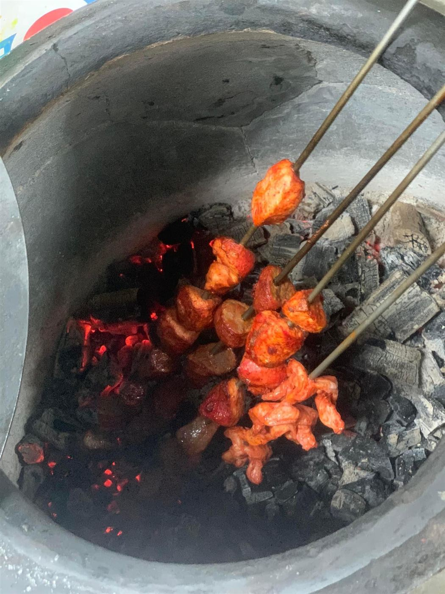
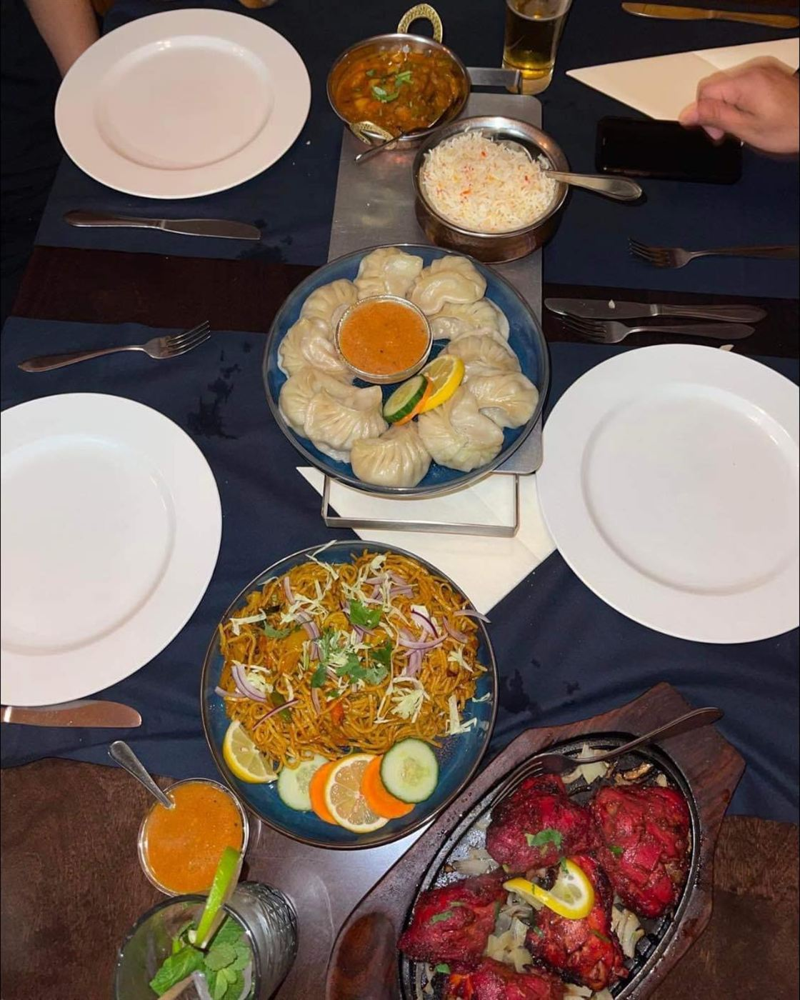
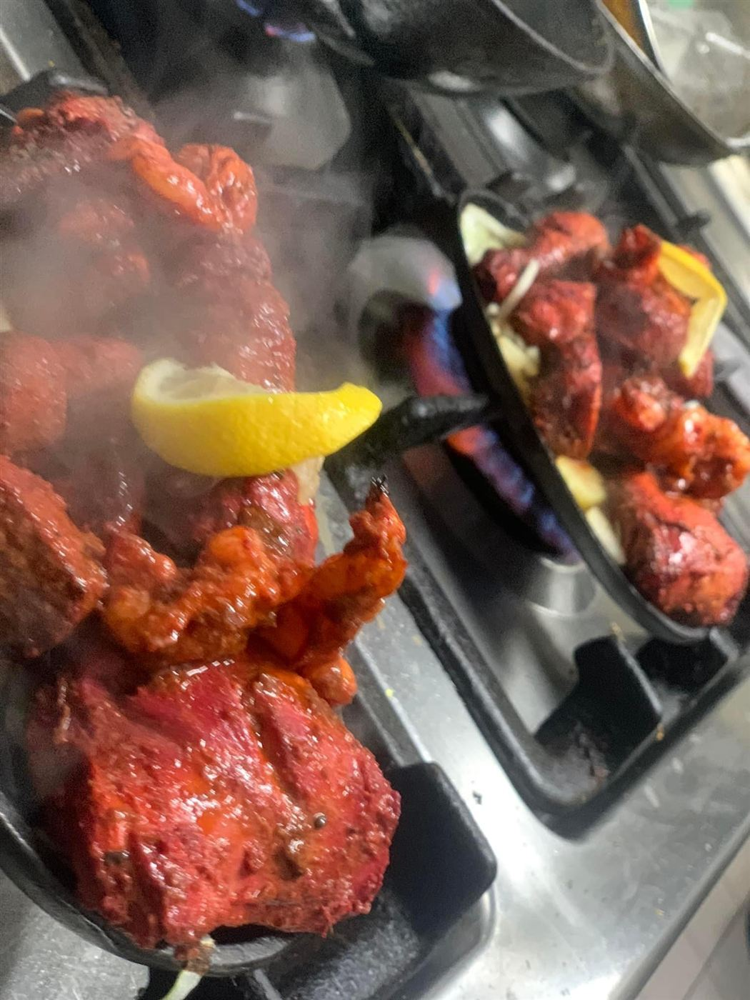
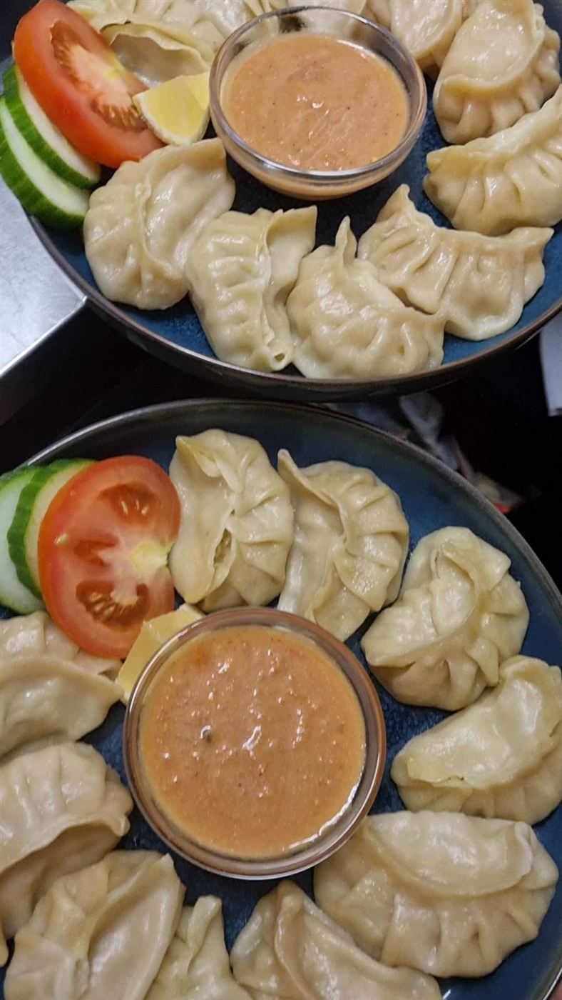

Noordeinde 15, Leiden
EverestTandoori
Indiase en Nepalese keuken, gegrild boven houtskool in de tandoori oven. Sinds 2009 een familierestaurant van de familie Rai.
Di t/m za 17:00 – 22:00 · zo 17:00 – 21:30 · ma gesloten
Welkom bij Everest Tandoori
Opgericht in 2009 door de familie Rai, met één doel: traditionele Indiase gerechten met een authentieke smaak, in een fijne sfeer.
Bij ons komen de rijke en gevarieerde smaken van de Indiase en de Nepalese keuken samen. Heeft u zin in een klassieke curry, iets uit de tandoori oven of Nepalese momo's? Er staat voor iedereen iets op de kaart, ook voor vegetariërs.
- Reserveren Boek vooraf een tafel, dan staat alles voor u klaar.
- Gezellig tafelen Diner in een warme, gastvrije omgeving.
- Afhalen en bezorgen Uw favoriete gerechten thuis of onderweg.



Een stukje Nepal aan het Noordeinde
Naast de bekende Indiase curry's staat er ook Nepalese huiskeuken op de kaart. Momo's zijn dumplings gevuld met kip of groente, in Nepal hét streetfood. Chow mein zijn roergebakken noedels met kool, wortel en ui.
- Momo kip€ 17,00
- Momo veg.€ 16,00
- Chow mein kip of garnalen€ 18,50
- Chow mein veg.€ 17,50
Tafel reserveren
Reserveer voor 1 tot 35 personen. Heeft u een vraag of een bijzondere wens? Bel of mail ons gerust.
Openingstijden
| Dinsdag | 17:00 – 22:00 |
|---|---|
| Woensdag | 17:00 – 22:00 |
| Donderdag | 17:00 – 22:00 |
| Vrijdag | 17:00 – 22:00 |
| Zaterdag | 17:00 – 22:00 |
| Zondag | 17:00 – 21:30 |
| Maandag | Gesloten |
Parkeren
Malibaan, ongeveer 120 meter van het restaurant. Gratis op zondag en van maandag t/m zaterdag vanaf 19:30.
Potgieterlaan, ongeveer 300 meter van het restaurant. 10 cent per uur, alleen de eerste 2 uur. Gratis op zaterdag en zondag en op werkdagen vanaf 19:30.